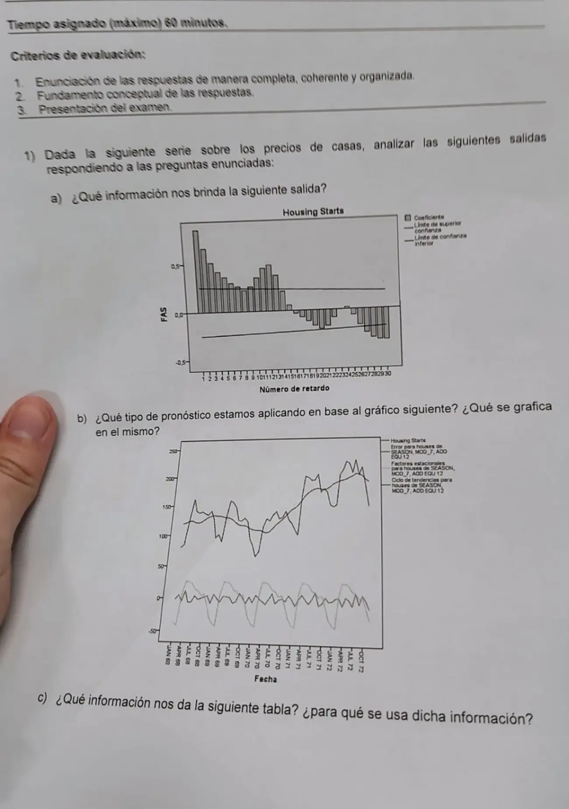
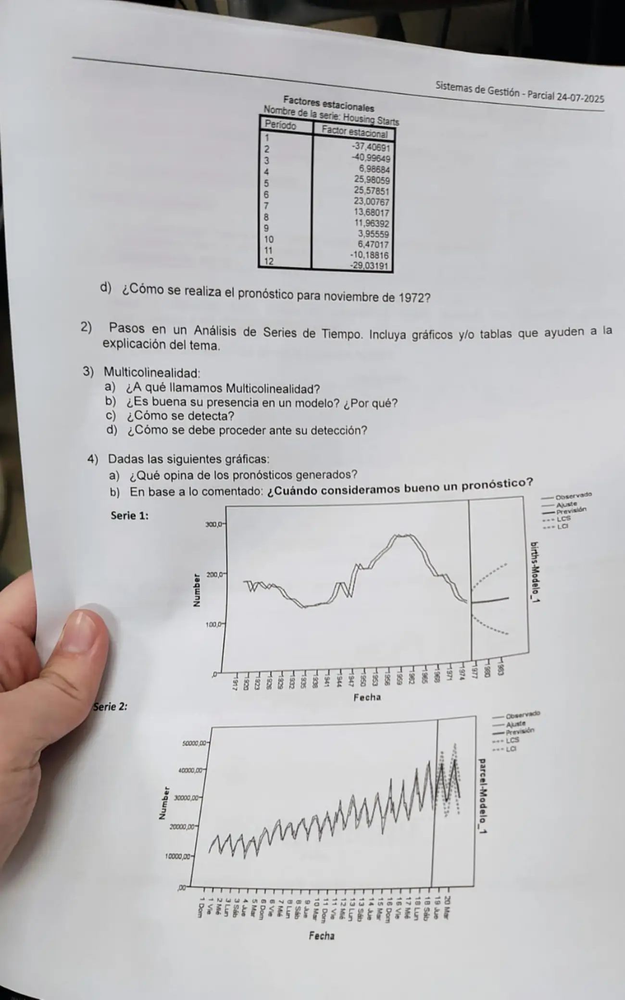

1° parcial 24/07/2025, teoría
1° parcial, 24/07/2025
Enunciado




Preguntas con opciones
Salen de este examen, adaptadas. Dejalas para el final, porque las opciones pueden dar pistas.
- 1
Según el apunte, ¿con qué indicador se detecta la multicolinealidad?
Se tomó: 1° parcial 24/07/2025, adaptada
Un VIF grande indica información redundante entre las variables explicativas.
Propuesta de respuesta
Respuesta no verificada. La propuso Luta Studios con inteligencia artificial y ningún docente la revisó. Puede tener errores.
1a. La salida FAS. Es la función de autocorrelación de la serie, un coeficiente por cada retardo con sus límites de confianza (Hanke, págs. 64 a 70).
- Los primeros coeficientes son altos, cerca de 0,8, y bajan de a poco. Es la huella de una tendencia (Hanke, págs. 69 a 76).
- Vuelven a subir alrededor del retardo 12. Con datos mensuales es un patrón estacional que se repite cada año.
- Muchos coeficientes salen de los límites, así que la serie no es aleatoria ni estacionaria. Para quitar la tendencia se trabaja con diferencias (Hanke, pág. 72), o se elige un método para tendencia y estacionalidad.
1b. El gráfico. Es una descomposición estacional aditiva, con período 12. Lo dicen las etiquetas, «SEASON», «ADD» y «EQU 12». Se grafican cuatro series.
| Línea | Qué es |
|---|---|
| Housing Starts | La serie original |
| Ciclo de tendencias | La tendencia y el ciclo juntos, la línea suave. El ciclo suele tratarse junto con la tendencia (Hanke, pág. 167) |
| Factores estacionales | La onda que se repite cada 12 meses alrededor de 0 |
| Error | El irregular, lo que queda sin explicar, también alrededor de 0 |
Es aditiva porque los factores y el error oscilan alrededor de 0, en unidades de la serie. En el multiplicativo oscilarían alrededor de 1.
1c. La tabla de factores. Son los factores estacionales aditivos de cada mes. Dicen cuánto se aparta en promedio ese mes de la tendencia-ciclo, en unidades de la serie.
| Período | Mes | Factor |
|---|---|---|
| 1 | Enero | -37,40691 |
| 2 | Febrero | -40,99649 |
| 3 | Marzo | 6,98684 |
| 4 | Abril | 25,98059 |
| 5 | Mayo | 25,57851 |
| 6 | Junio | 23,00767 |
| 7 | Julio | 13,68017 |
| 8 | Agosto | 11,96392 |
| 9 | Septiembre | 3,95559 |
| 10 | Octubre | 6,47017 |
| 11 | Noviembre | -10,18816 |
| 12 | Diciembre | -29,03191 |
Suman 0, como corresponde a un aditivo. Enero y febrero son los meses más bajos, unos 37 y 41 por debajo, y abril, mayo y junio, los más altos, unos 23 a 26 por encima. Se usan para desestacionalizar, (Hanke, pág. 179), y para pronosticar.
1d. El pronóstico de noviembre de 1972. Noviembre es el período 11. En el aditivo los componentes se suman, y si no hay más información el irregular vale 0, como en el multiplicativo vale 1 (Hanke, pág. 186).
es el valor de la tendencia-ciclo en noviembre de 1972. Si ese mes ya no tiene dato, se proyecta la tendencia.
2. Pasos en un análisis de series de tiempo. Son los cinco de Hanke (págs. 5 y 6).
| Paso | Qué se hace |
|---|---|
| 1. Formular el problema y recopilar datos | Qué decisión apoya, quién lo usa, qué detalle y horizonte tiene, qué datos hay, cuánto cuesta y qué exactitud se pide (Hanke, pág. 6) |
| 2. Manipular y limpiar los datos | Faltantes, atípicos y datos que no sirven. Se mira el patrón con un gráfico y con la autocorrelación |
| 3. Construir y evaluar el modelo | Se elige la técnica según el patrón y se mide el error con MAD, MSE, MAPE y MPE |
| 4. Implementar el modelo | Se genera el pronóstico |
| 5. Evaluar el pronóstico | Se compara con datos recientes que quedaron afuera del ajuste, y se vigila con la señal de control |
| Patrón | Técnicas (Hanke, págs. 78 y 79) |
|---|---|
| Estacionario | Promedio simple o móvil, ARMA |
| Tendencia | Holt, regresión, curvas de crecimiento |
| Estacional | Descomposición, Winters, Census X-12 |
| Cíclico | Descomposición, indicadores, regresión múltiple |
3. Multicolinealidad.
- a. «Indica la interrelación entre las variables independientes de una ecuación de regresión múltiple.»
- b. No es buena. El mismo apunte dice que un VIF grande «significa que existe información redundante entre las variables explicativas» y que se resuelve eliminando las redundantes, o sea que la trata como un problema para corregir.
- c. «Se detecta mediante el indicador VIF», que es en la hoja de fórmulas.
- d. «Se resuelve identificando y eliminando uno o más de las variables independientes redundantes de la función de regresión. Si no es posible eliminar ninguna variable, existen métodos matemáticos de regresión que permiten solucionar este problema.»
(Preguntas frecuentes vFinal, pág. 5.)
4a. Los pronósticos de las dos series.
- Serie 1 (nacimientos por año). El ajuste repite al observado corrido un año, como un pronóstico que copia el último dato. Llega tarde a cada giro de la serie. La previsión queda casi plana y los límites LCS y LCI se abren mucho, así que el pronóstico dice poco a varios años.
- Serie 2 (paquetes por día). El ajuste sigue muy de cerca al observado, con su tendencia y su patrón que se repite. La previsión continúa ese patrón con límites más angostos. Es el mejor de los dos.
4b. Cuándo un pronóstico es bueno.
- Sus residuos son aleatorios y aproximadamente normales, sus coeficientes son significativos y quien decide lo entiende (Hanke, págs. 84 y 85).
- Sus errores son chicos (MAD, MSE, MAPE) y no tiene sesgo, con un MPE cerca de cero (Hanke, pág. 84).
- Anda bien con datos que quedaron afuera del ajuste (Hanke, págs. 5 y 6), y su señal de control queda dentro de los límites (Hanke, págs. 124 a 126).
Respuesta no verificada. Puede tener errores.
Se armó con 1° parcial, secciones Autocorrelación, Descomposición, Los cinco pasos del pronóstico, Qué técnica va con cada patrón, Medidas de error, Señal de control y Multicolinealidad.
Quedó en duda: En la foto, la columna de factores parece corrida un renglón respecto de los períodos. Son 12 valores y se asignaron del 1 al 12, que es lo que da el patrón típico de inicios de viviendas, bajo en invierno. Los gráficos se leyeron de una foto, así que los valores aproximados de la FAS y la lectura de la serie 1 como una copia del último dato pueden no coincidir con lo que espera la cátedra. En 3b el apunte no dice si es buena. Se dedujo de que la trata como un problema a resolver. En 1d no se ve si la serie llega a noviembre de 1972.
¿Cómo te fue?
Marcá cada tema del examen. Las preguntas con opciones ya se corrigieron solas.
- Salidas de un programaCómo viene el examen, en 1° parcial
- MulticolinealidadMulticolinealidad, en 1° parcial
- Pasos del pronósticoLos cinco pasos del pronóstico, en 1° parcial